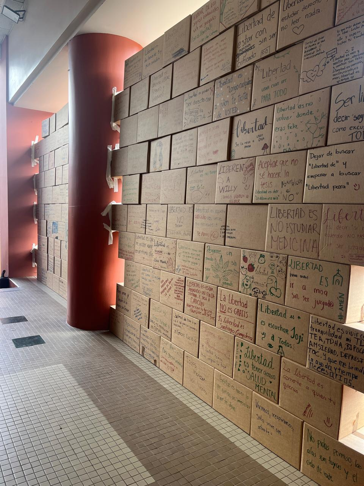
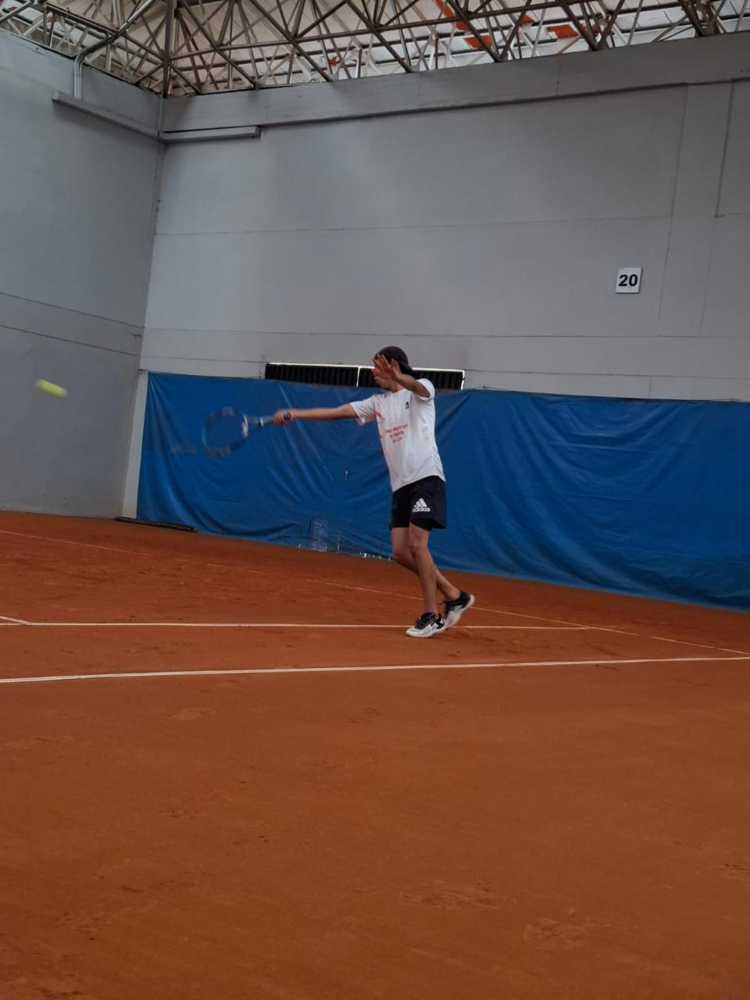

El manejo de nuestras emociones es fundamental en nuestro diario vivir. Estas son los desencadenantes de nuestras acciones y, por tanto, dictan la forma en la que tomamos decisiones y respondemos a los estímulos de nuestro entorno. Debemos entender que cada uno de nosotros percibe de forma distinta estos estímulos, ya provengan del ambiente, de nuestro círculo social o de nuestro propio actuar.
A partir de ello, la forma en la que manejamos la ira se vuelve un concepto central. A pesar de considerarme una persona que tiene que lidiar muy pocas veces con situaciones de enojo debido a mi personalidad alegre y tranquila, reconozco que cada uno de nosotros tiene distintas formas en las que esta emoción se puede presentar. En este contexto, es muy importante entender que no debemos minimizar la ira bajo ninguna circunstancia. Debemos sentirla, procesarla y entenderla para, de esa forma, poder tomar decisiones coherentes y responsables, primordialmente con nosotros mismos y con nuestro buen vivir social.

Cuando me toca procesar la ira, trato de interiorizar lo que siento y entender el origen de esta emoción. Esto me permite tener un panorama amplio y completo de cómo me siento y cómo puedo llegar a una solución. Trato de hacerlo de manera rápida para que mis siguientes acciones y pensamientos no se distorsionen ni pierdan objetividad. En caso de que la ira evoque ansiedad o impotencia, trato de relajarme físicamente primero, haciendo respiraciones profundas o recurriendo a la meditación para controlar este flujo en mi ser.
Posterior a ello, evalúo un abanico de posibilidades para mi siguiente paso. Analizo rápidamente la mejor opción y no me quedo preocupado por si fue la más efectiva de todas; más bien, me mantengo atento a su margen de error. Constantemente trato de ir mejorando mi toma de decisiones con respecto a la anterior, sin abrumarme, pero entendiendo que a veces puede haber daños colaterales en el camino hacia la mejor elección.
Una de las herramientas que más me ayuda en este proceso de regulación es la actividad física. Ya sea entrenando con intensidad, nadando o simplemente conectando con el entorno, el movimiento me permite drenar cualquier tensión acumulada. Al mantener mi cuerpo activo, logro despejar mi mente, lo que facilita esa rápida evaluación de opciones y me permite mantener mi personalidad tranquila frente a los desafíos diarios.
¿Qué te pareció? ¡Deja tu comentario!